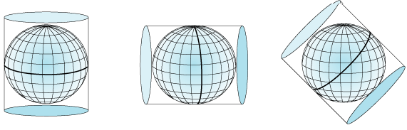

Reproject
This geoprocess reproject all features of the input layer. To do that, user must specify the new projection for them.

This is useful to load layers with different projections in a same project.